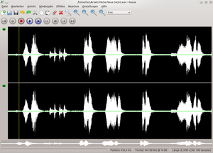
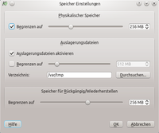
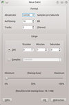
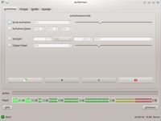
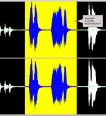
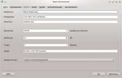
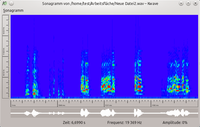

Kwave
Dieser Artikel wurde für die folgenden Ubuntu-Versionen getestet:
Ubuntu 14.04 Trusty Tahr
Zum Verständnis dieses Artikels sind folgende Seiten hilfreich:
Kwave  ist ein einfacher, unter der GNU General Public License (GPL) speziell für die KDE-Desktopoberfläche herausgegebener grafischer Audio-Editor/-Recorder für GNU/Linux. Das Programm wird aktiv weiterentwickelt und wartet laut Aussagen der Entwickler etwa alle 3-4 Monate mit einer neuen Version auf. Kwave unterstützt Aufnahme, Wiedergabe und Bearbeitung vieler Audioformate inklusive Mehrkanal-Dateien.
ist ein einfacher, unter der GNU General Public License (GPL) speziell für die KDE-Desktopoberfläche herausgegebener grafischer Audio-Editor/-Recorder für GNU/Linux. Das Programm wird aktiv weiterentwickelt und wartet laut Aussagen der Entwickler etwa alle 3-4 Monate mit einer neuen Version auf. Kwave unterstützt Aufnahme, Wiedergabe und Bearbeitung vieler Audioformate inklusive Mehrkanal-Dateien.
Kwave bietet eine Vielzahl von Nutzungsmöglichkeiten:
Audio-Live-Aufnahme über ALSA
Rückgängig-/Wiederherstellen-Historie
Einfache Bedienung per Drag'n'Drop-Funktionalität
Echtzeit-Vorhören für einige Effekte
Unterstützung von Mehrkanal-Dateien
Bearbeitung auch großer Dateien mittels virtuellem Speicher
Im- und Exportfunktion der verschiedensten Audioformate (z.B. WAV, AIFF, FLAC, OGG, ...)
Audiodateien schneiden, kopieren und mischen
Änderung der Tonhöhe oder Lautstärke einer Aufnahme
Angleichen der Lautstärke (Normalisierung)
Mehrfenster-Unterstützung
Erweiterbares Plugin-Interface
Plugins wie Ein-/Ausblenden, verschiedene Passfilter, Spektrogramm (Sonagramm), Samplerate, Stille und einiges mehr
Unterstützte Dateiformate:
WAV (.wav)
OGG-Audio (.ogg, .oga)
OGG-Multimediadatei (.ogx)
FLAC (.flac)
AIFF, Amiga, Mac-Audio (.aifc, .aiff, .aif); Import
µ-law (Sun Microsystems) (.au, .snd); Import
Berkeley, IRCAM, Carl Sound Format (.sf); Import
ASCII (.ascii); nur Export
Für die Verwendung von Dateiformaten wie MP3, die derzeit nicht von Kwave unterstützt werden, wird empfohlen, auf ein externes Konverter-Programm wie zum Beispiel SoX zurückzugreifen.
|  |
| Kwave |
Installation¶
Folgendes Paket wird für die Installation [1] benötigt:
kwave (universe)
 mit apturl
mit apturl
Paketliste zum Kopieren:
sudo apt-get install kwave
sudo aptitude install kwave
Benutzung¶

Speichereinstellungen¶
Bei der ersten Verwendung sollte unter Menü "Optionen -> Speicher" der Einstellungsdialog für die Speicherverwendung aufgerufen werden. Dort kann je nach verwendeter Hardware festgelegt werden, wie Kwave mit dem physikalischen Speicher (RAM) und dem virtuellen Speicher (Auslagerungsdatei) umgehen soll. Das Limit zur Verwendung des physikalischen Speichers sollte nicht zu hoch eingestellt werden, damit das Programm nicht zu viele Ressourcen für andere Programme blockiert. Die Verwendung von Auslagerungsdateien bedeutet, dass temporäre Dateien verwendet werden, welche die Zwischenspeicherung von Audiodateien erlauben, die größer sind als der verwendete physikalische Speicher.
Ansichtsoptionen¶
Die optische Darstellung der neu erstellten oder aufgenommenen Tonspuren im Programm kann im Menü "Ansicht" verändert werden. So kann per Zoomfunktion die Darstellungsgröße variiert oder zu einer bestimmten Position gesprungen werden.
In dem ganz unten im Hauptfenster liegenden Übersichtsstreifen wird unabhängig vom Vergrößerungsgrad die gesamte Aufnahme in angedeuteter Form angezeigt, sodass mittels Maustaste ein Springen zu jeder beliebigen Stelle möglich ist (Mauszeiger verwandelt sich in Plus-Symbol).

Erstellen einer neuen Datei¶
Beim Erstellen einer neuen Datei mittels Menü "Datei -> Neu" öffnet sich ein Einstellungsfenster, in welchem Abtastrate, Samplerate, Anzahl der Spuren und Länge der Datei (einstellbar über die Aufnahmedauer, die Anzahl der Samples oder die maximale Dateigröße, welche von Kwave auf 2GB begrenzt wird) eingestellt werden kann.

Aufnahme¶
Beim Starten einer Aufnahme über die rote Aufnahme-Schaltfläche oder über Menü "Datei -> Aufnehmen" (alternativ Tastenkürzel F2 ) öffnet sich ein Einstellungsfenster, in welchem sich detailliert Details wie Aufnahmedauer, Programmierung der Startzeit, Details des Aufnahmeformats, Aufnahmequelle und vieles mehr festlegen lassen. Gestartet, pausiert und beendet wird die Aufnahme dann über den Aufnahmeknopf im Reiter "Aufnehmen".
Wiedergabe¶
Mittels der in der Werkzeugleiste angezeigten Abspielschaltflächen oder über das Menü "Wiedergabe" kann die aktuelle Audiodatei wiedergegeben werden. Es ist auch eine Wiedergabe in einer Wiederholschleife möglich. Durch  -Mausklick auf das links einer jeden Spur angezeigte grüne "Lämpchen" kann diese Spur deaktiviert werden ("Lämpchen" wird rot) und ist dann bei der Wiedergabe nicht hörbar.
-Mausklick auf das links einer jeden Spur angezeigte grüne "Lämpchen" kann diese Spur deaktiviert werden ("Lämpchen" wird rot) und ist dann bei der Wiedergabe nicht hörbar.
Bearbeiten¶

Markieren¶
Bereiche einer Audiodatei, welche zur Bearbeitung herangezogen werden sollen, werden mit der -Maustaste markiert; der zuvor schwarz hinterlegte Bereich wird dadurch gelb markiert. Weitere Markierungsoptionen finden sich im Menü "Bearbeiten -> Auswahl".
Schneiden¶
Bearbeitungsfunktionen können sowohl innerhalb einer einzelnen Datei als auch über mehrere Fenster ("Datei -> Neues Fenster") hinweg angewendet werden. So ist es zum Beispiel möglich, einen markierten Bereich einer Datei in die Zwischenablage zu kopieren ("Bearbeiten -> Kopieren"), anschließend durch Platzierung des Cursors an der gewünschten Stelle die Zielposition festzulegen und die Zwischenablage dann an dieser Stelle einzufügen ("Bearbeiten -> Einfügen"). Dieses Verhalten funktioniert auch bei zwei in verschiedenen Fenstern geöffneten Dateien.
Effekte¶
Zur weiteren Bearbeitung bietet das Programm einige Effekte wie z.B. Manipulation der Lautstärke, Normalisieren, Ein-/Ausblenden, verschiedene Passfilter (mit Vorhörfunktion), Tonhöhenmanipulation ("Tonverschiebung") u.a. an, die über das gleichnamige Menü erreichbar sind. Die Effekte können auf eine ganze Audiodatei oder auf markierte Bereiche Anwendung finden.
Mit Hilfe des Menüs "Berechne" können markierte Bereiche durch Rauschen oder Stille ersetzt werden.

Datei-Eigenschaften¶
Über das Menü "Bearbeiten -> Datei-Informationen" können verschiedene zusätzliche Dateiinformationen verwaltet und mit der Audiodatei zusammen gespeichert werden. Falls solche Dateiinformationen aufgrund mangelnder Unterstützung durch das Speicher-Format (wie z.B. .wav) nicht erhalten werden können, wird dies von Kwave durch eine Warnung signalisiert.
Audiospuren¶
Hinzufügen, Entfernen oder Bearbeiten von Spuren erfolgt über das Menü "Bearbeiten -> Track". Mithilfe von Tonspuren können vielerlei Ergebnisse erzielt werden:
Aus Mono-Aufnahmen kann Pseudo-Stereofonie erzeugt werden,
Musikstücke können gemischt werden, z.B. einen Audiokommentar mit einem geeigneten Lied untermalen,
Elemente einer Spur können separat ausgeschnitten und in eine andere Spur kopiert werden
und vieles mehr.

Sonagramm¶
Mithilfe der Funktion "Menü -> Sonagramm" kann eine optische Frequenzanalyse einer Audiodatei oder eines markierten Bereichs durchgeführt werden. Es stehen dazu einige Einstellmöglichkeiten zur Verfügung. Diese Frequenzanalyse kann über ein kleines Untermenü "Sonagramm" für eine eventuelle weitere Verwendung als Bitmap-Datei exportiert werden.
Wer für diese Aufgabe ein separates Programm sucht, kann sich Spek anschauen.
Tastenkürzel¶
Es stehen viele Tastenkürzel für die einzelnen Funktionen des Programms zur Verfügung. Diese sind in den Menüs bei den jeweiligen Funktionen angegeben. Eine Verwendung von Tastenkürzeln kann die Benutzung des Programms schneller und effektiver machen.
 , welches die Entwickler im Internet bereitstellen.
, welches die Entwickler im Internet bereitstellen. Programmübersicht
Programmübersicht- Erstellt mit Inyoka
-
 2004 – 2017 ubuntuusers.de • Einige Rechte vorbehalten
2004 – 2017 ubuntuusers.de • Einige Rechte vorbehalten
Lizenz • Kontakt • Datenschutz • Impressum • Serverstatus -
Serverhousing gespendet von